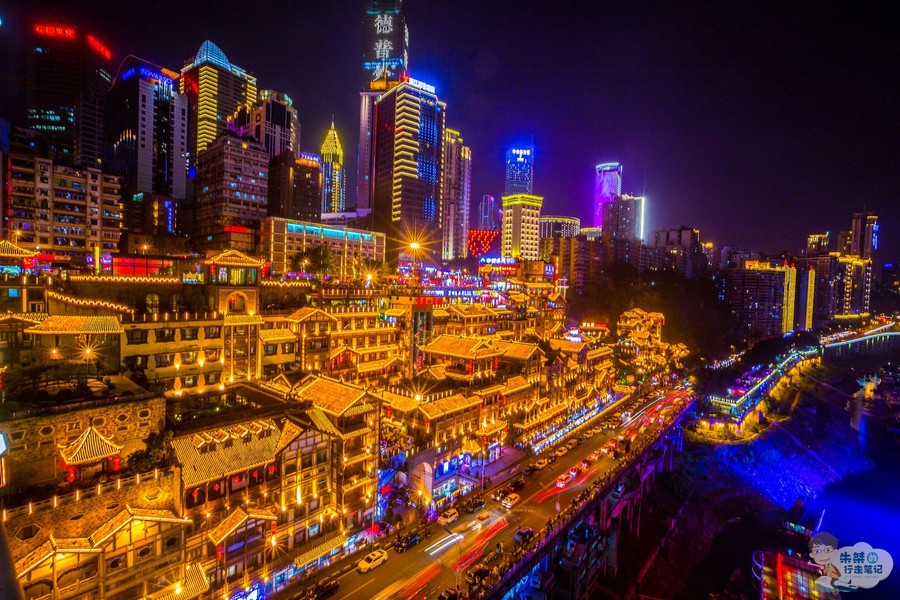

Chongqing is a sprawling municipality at the confluence of the Yangtze and Jialing rivers in southwestern China. In the city center, the large, domed Great Hall of the People complex stands above pedestrianized People's Square. On the other side of the square, the Three Gorges Museum features artifacts from the construction of the Three Gorges Dam as well as ancient art.
Area: 31,776 mi²
Elevation: 801′
Population: 30.48 million (2016)
Weather: 79°F (26°C), Wind S at 4 mph (6 km/h), 86% Humidity
There is an interest thing in Chongqing is that navigation will failuer. Because the terrian is very complex in Chongqing.
Chilies are the most important part of every meal in Chongqing. Almost everyone in Chongqing eats chilies. The most popular food is Chongqing hot pot.

The another difficult in Chongqing is the summer! In every summer Chongqing will be very hot, but there still a lot of people eat hot pot in summer! We eat it any season, hahaha.